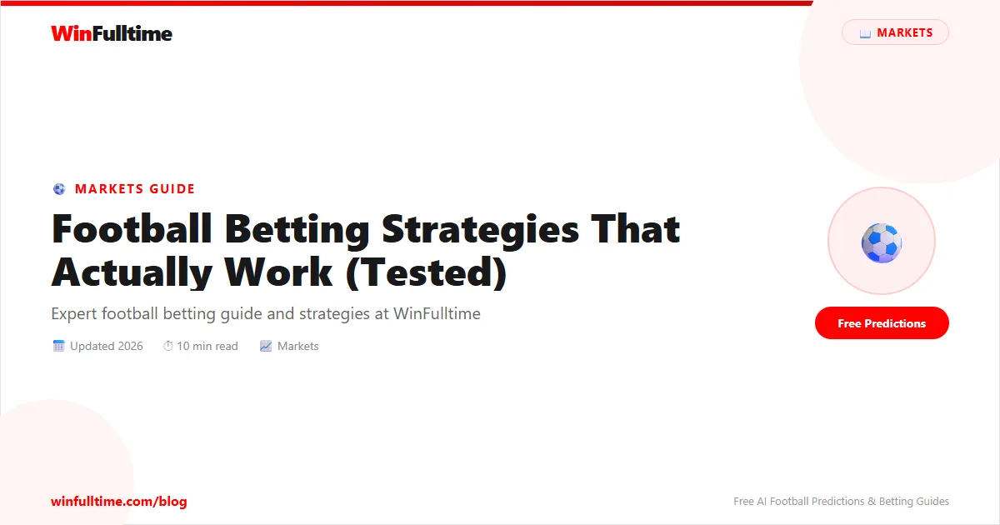

I've spent years looking at football betting strategies. Some promise the earth -"Guaranteed wins!" "Secret systems!" - and deliver nothing. Others are genuinely useful but get overlooked because they're not flashy or revolutionary.
The truth? There's no magic system that will make you rich overnight. But there are legitimate strategies that, when applied consistently and with discipline, can genuinely improve your betting results.
Let me share the strategies that actually work - some I've used myself, others I've seen work for consistent bettors over years.
This is THE most important strategy, and I'm putting it first because everything else builds on it.
Value betting means finding odds that are higher than the true probability of an outcome. When you consistently find value, you have a mathematical edge over the bookmaker.
Let's say you think Liverpool have a 60% chance of winning (meaning true odds would be 1/0.60 = 1.67). But the bookmaker is offering 2.00.
That's value! Your expected return is positive:
Expected Value = (Probability ? Odds) - 1
EV = (0.60 ? 2.00) - 1 = 1.20 - 1 = +0.20 (or 20% ROI)
Over many bets, that 20% edge adds up.
This is the hard part - and where your football knowledge matters. You need to:
Specialising in one or two leagues helps enormously. You know the teams, the managers, the injuries - all the nuanced stuff that bookmakers sometimes miss.
Asian Handicap betting is massive in Asia but underutilised elsewhere. Here's why it can be brilliant:
Instead of backing a team to win, you back them with a handicap (-1, -1.5, etc.). This eliminates the draw as a possibility and often gives you better odds on the favourite.
Manchester United (-1) vs Crystal Palace
If you back Man United -1:
This gives you more flexibility than traditional 1X2 betting.
Asian Handicaps are especially useful when backing strong home teams. The -1.0 and -1.5 lines often offer better value than simply backing them to win in standard 1X2 markets.
Live betting gets a bad reputation, and often rightly so - the odds move fast and it's easy to chase losses. But there's a patient, disciplined approach that can work.
The idea: Watch the first 15-20 minutes of a match before making your move. By then, you've got real information - who's controlling the game, who looks likely to score, who looks off their game.
Draws are often overlooked because they're"boring" - people want to back winners. But draws can offer genuine value, and here's how to approach them strategically.
Let's say you identify a match likely to end in a draw. Instead of just backing the draw, consider:
Double Chance: Draw + Away (or Home)
This gives you two chances to win. If it's a draw or the underdog wins, you win. The odds are lower, but you've got more ways to win.
Correct Score: 1-1, 0-0
These are the most common draw scores. If you're confident it's a draw, backing a 1-1 often offers good value.
One of the biggest mistakes I see is bettors jumping around between leagues, sports, and markets. They bet on the Premier League one day, NBA the next, random accumulator the day after.
The better approach: Build a portfolio. Specialise in specific areas where you have knowledge and edge.
Step 1: Pick 1-2 leagues you know well (e.g., Premier League + Championship)
Step 2: Focus on 2-3 markets (e.g., 1X2 + Over 2.5)
Step 3: Track every bet meticulously
Step 4: Review monthly - where's your edge? Where are you losing?
Step 5: Narrow down further if needed. It's better to be excellent in one area than mediocre in many.
Intuition has its place, but consistently profitable bettors rely on data. The key is knowing which stats actually matter.
Here's how I'd approach building a betting strategy if I were starting fresh:
And honestly? Some of the best bettors I know are boring. They find one good market, one good league, and they hammer it consistently. They don't need flashy accumulator bets. They need a 52-53% hit rate on value bets, and that's enough.
Betting strategies are just one piece of the puzzle. To really improve, you'll want to understand the fundamentals and build from there:
Get daily football predictions with probability data to help you spot value:
Generate optimized accumulator combinations from today's AI-powered predictions. Set your target odds and get instant ticket suggestions.
Free Ticket Builder →